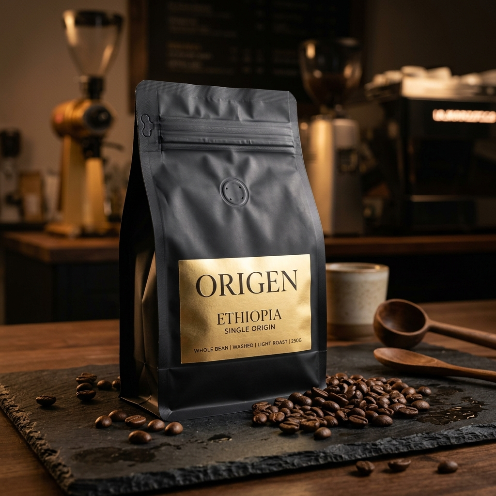

Nuestro Menú de Origen
Selecciona tu bebida o grano favorito y agrégalo a tu orden.
Favorito

Granos de Café
Etiopía Yirgacheffe
Notas florales de jazmín, té negro y un sutil toque cítrico a bergamota. Tueste medio.

Café Caliente
Espresso Doble
Extracción intensa de nuestra mezcla de la casa, crema densa y notas de chocolate amargo.
Clásico

Café Caliente
Capuchino Italiano
Espresso perfectamente balanceado con leche vaporizada y una corona de espuma aterciopelada.

Café Caliente
Flat White Velvet
Doble Ristretto coronado con microespuma de leche sedosa. Textura extra suave.
Refrescante

Bebidas Frías
Cold Brew Infundido
Café extraído en frío por 18 horas, con notas cítricas marcadas y cuerpo súper ligero.
Gourmet

Repostería Premium
Croissant de Pistacho
Hojaldre de mantequilla pura, relleno con crema de pistacho siciliano y decorado con pistachos tostados.